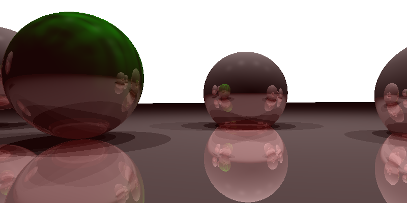

Python Web Scraper
This is my current side project I'm working on! The goal is for me to improve my skills that are relevant to Data Science,
and to also create something that can be useful for me in the future. I am currently working on obtaining flight data from both
airline websites and booking websites like Trivago.com, in order to find the best deal for flights throughout Canada. I am also incorporating
functions from libraries that I have never had a chance to work with before, like BeautifulSoup and Requests.
Basic Shell Interpreter
I created this project for a course I took which focused on studying Operating Systems.
What I have created is a simple shell, similar to Bash or Powershell,
that is able to take basic input from the user and execute specific commands.
This shell was written in C, and is able to run commands, change directories, and run certain processes in the background upon the users request.
Abstract Art Generator
This was a project I created whilst taking my first ever Software Engineering course.
The purpose of this assignment was to show how efficient object-oriented programming is,
and thus we were to write a program to generate abstract artwork using Python.
The photo pictured here is an example of the output generated by this program,
as each output is determined by random number generation functions which determine
the number of shapes as well as their different size and color values.
PThread Train Simulation
The purpose of this project was to learn more about the posix pthread library,
and gain a better understanding of how an operating system uses threads to schedule processes.
This program accepts a formatted text file, with each line giving information about a train, and runs the simulation according to specific rules.
I wrote this program in C, and have included an example photo of what the final output would look like once the program is run.
Route Manager - C
The purpose of this project was to get familiar coding in C by creating a pipes & filters program that uses conditionals, loops, and string processing tools.
In this specific example, I began with a file containing data on airline routes,
and was instructed to clean the data and present it in a specific format that would make it more readable, and portray
the information in a specific way according to the user's request.
Route Manager - Python
This project was similar to the previous Route Manager program, but was instead written in Python.
The starting files were the same,
starting out with a formatted file containing
information on international airline routes.
However, the sorting required for this one was more
complicated, as there were more options for the user to input.
This meant that there was a lot more work to do to clean
and reformat the data according to the specifications.
However, Python made this much easier, as I was able to use
Pandas to help me drop unnecessary columns and improve my overall runtime.

Simple Ray Tracer
This is one of my more recent projects,
as I created it as a part of my Computer Graphics course
I took in the Spring of 2024. This assignment was fairly challenging,
as it was written in C++ and was an entirely new topic for me.
Using Eigen, I had to calculate the position, shadows, and
texture of various objects laid throughout the plane, and
create the image by shooting numerous rays into the image.
It was a lot of work to put together, but was very satisfying seeing the end result.
Rasterizer
This project was the final project I created in my recent Computer Graphics course,
and was much different from everything else we had done in the course at this point.
Moving away from ray tracing, we were now tasked with using Rasterization to generate
images and gifs in C++. Not only did this involve lots of calculations,
but I also had to focus a lot on the theory of what the rasterization
pipeline is before implementing it in my code. This took me a while to figure
out, but the end result was totally worth it - I have more gifs and images
produced by this program available in my GitHub.